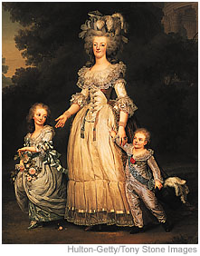

|
***NEWS FLASH*** |
|
 From Brother T. von S. in Paris: The much-hated Widow Capet, formerly Queen Marie Antoinette of France, died on the guillotine today. Since Citizen Louis Capet, the former king, was beheaded in January of this year, his widow has remained imprisoned with her children. Less than a week ago, the Widow Capet was tried and found guilty of plotting a foreign invasion of France and of sending millions of francs to her brother, Emperor Leopold II of Austria. Today, she was led to the place of execution in the same manner as an ordinary criminal, bound and riding in a cart. Shortly past noon, amid the crowd's cheers of "Vive la République," her head fell. It is not currently known what has happened to her two surviving children: a 15-year-old daughter called Marie-Therese and an 8-year-old son called Louis-Charles, regarded by some as King Louis XVII of France. |